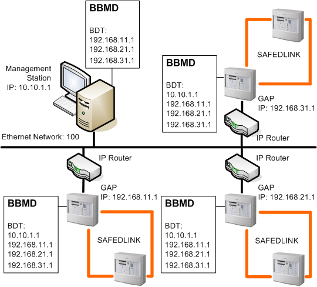
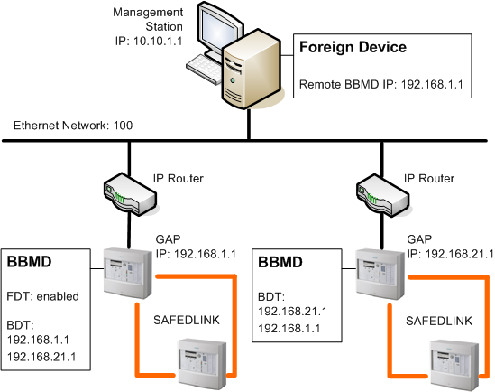

BACnet Networks for FS20 Fire Applications
The application communication is based on the BACnet standard protocol.
BACnet is a building automation and control networking protocol designed to meet the communication needs of building automation and control systems, as well as safety applications.
Desigo CC uses BACnet in combination with IP networks (Ethernet). This solution is called BACnet/IP although it is referred to as BACnet in this documentation.
BACnet Network
On IP infrastructures applying UDP services, a BACnet network (BACnet/IP) consists of one or more IP subnets. All networked units are BACnet devices and must have a unique Device Identifier. The Desigo CC Server or FEP (represented by the BACnet driver) are also BACnet devices.
BACnet Addressing
The BACnet addressing is based on the instance number, the BACnet Device identifier (a value between 0 and 4194303). The instance number configured in Desigo CC for BACnet panels must match the BACnet Device ID configured in the engineering tool of the panels.
BACnet Interfaces
When a BACnet interface (for example, the NK823x Ethernet Port) is used to integrate non-BACnet panels, both the interface and the connected panels have assigned a unique instance number at Desigo CC level.
BACnet Stack Protocol Service
The BACnet Stack Protocol Service (BACstack) is the driver that handles the network communication. The BACstack service handles a physical port for every physical driver.
BBMD and Foreign Device
A BACnet network with a single IP subnet network allows all BACnet devices to communicate among them without any additional configuration.
A BACnet network comprising multiple IP subnets requires IP routing services—provided by standard IP equipment—as well as additional BACnet routing services, which can be provided by two different mechanisms:
- BACnet Broadcast Management Device (BBMD). BBMD devices handle the BACnet broadcast messages across multiple IP subnets. You must configure one BBMD per IP subnet and make BBMDs across subnets aware of each other.
- Foreign Device. A Foreign Device connects a single device from a separate IP subnet to the BBMD to communicate with the entire BACnet subnet.
BACnet Broadcast Message Routing
The management station can act as BBMD or as a Foreign Device to manage the communication across multiple BACnet/IP subnets.
- Management station as BBMD. The management station must include in the Broadcast Distribution Table (BDT) the IP addresses of all subnet units acting as BBMD. All subnet units acting as BBMD must include the management station IP in the BDT.
NOTICE

Two BBMDs in the Same Subnet
There must be one and only one BBMD for each subnet. Two BBMDs in the same subnet can cause communication problems.
See Figure Management Station as BBMD and related Table Management Station as BBMD: BACnet/IP Port Properties.- Management station as Foreign Device. You need to register the management station to the IP address of the subnet unit acting as BBMD. The subnet unit acting as BBMD must be enabled to manage the Foreign Device Table (FDT).
See Figure Management Station as Foreign Device and related Table Management Station as Foreign Device: BACnet/IP Port Properties.

Management Station as BBMD: BACnet/IP Port Properties | ||
Tab | Parameter | Value |
Port | Port ID | 1 |
Network number | 100 | |
UDP port | 47808 | |
BBMD | Broadcast distribution table | 192.168.11.1 (UDP port: 47808) |
Foreign Device | — | — |

Management Station as Foreign Device: BACnet/IP Port Properties | ||
Tab | Parameter | Value |
Port | Port ID | 1 |
Network number | 100 | |
UDP port | 47808 | |
BBMD | — | — |
Foreign Device > Remote BBMD | IP address | 192.168.1.1 |
UDP port | 47808 | |
IP Routing
One of the fire units acts as a Global Access Point (GAP) and handles the BACnet communication to the management station.
In case of multiple IP subnets, you must configure a proper IP routing configuration so that the management station can reach all of the FCnet/SAFEDLINK units via the GAP unit. This can be achieved in two ways:
- In simple architectures, you set the GAP IP address as the Default Gateway in the IP settings of the management station (server or stand-alone station).
- In complex networks, you should define appropriate IP routing tables on the management station so that the entire FCnet/SAFEDLINK can be reached via a number of IP routing devices and the GAP unit.
- To add a permanent routing table, open a Windows Command Prompt and use the route add command, for example:
route add -p 192.168.2.0 MASK 255.255.255.0 192.168.1.10 METRIC 1
where:
192.168.2.0 is the subnet to reach.
MASK 255.255.255.0 means that all packets coming from IP addresses 192.168.2.x will be considered.
192.168.1.10 is the GAP address.
METRIC 1 is the routing table priority (between two routing tables with same parameters, the routing table with the lowest value has the highest priority).